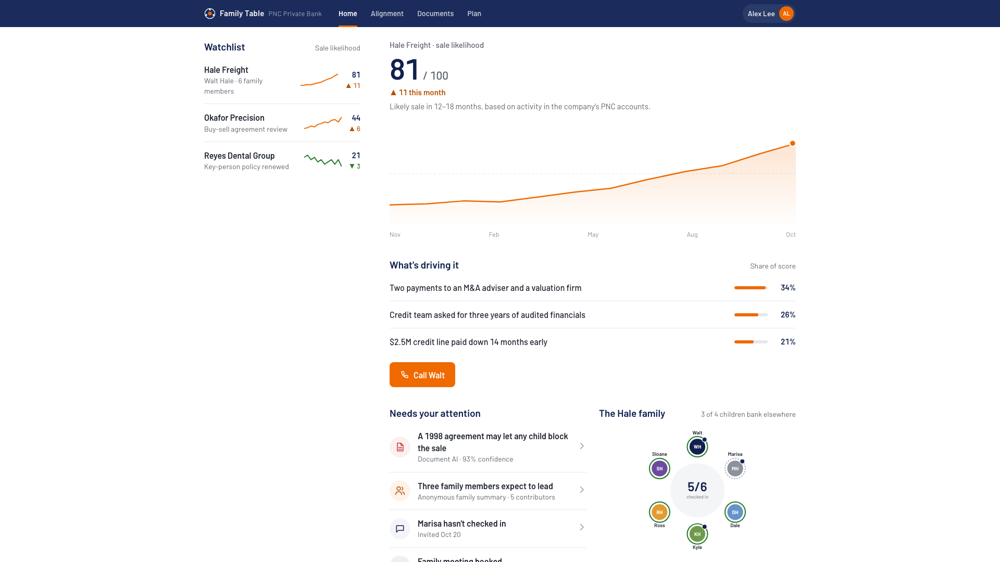
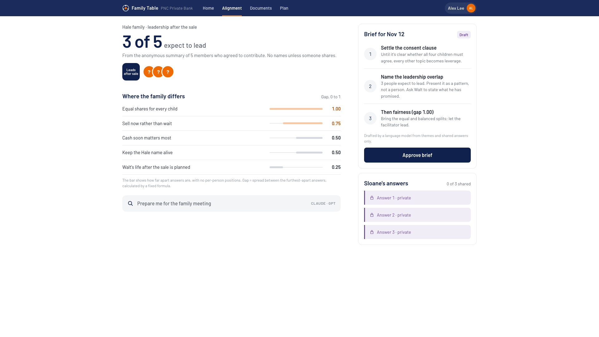
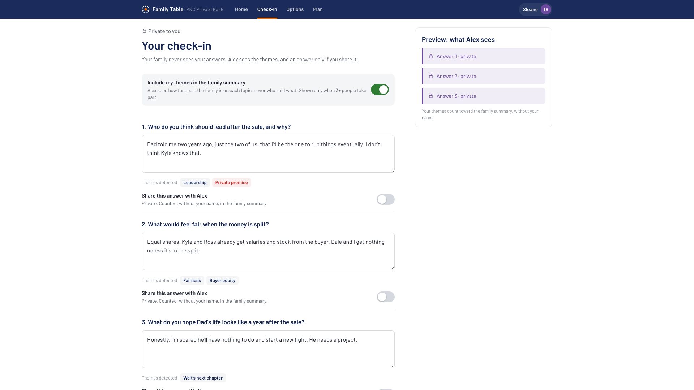
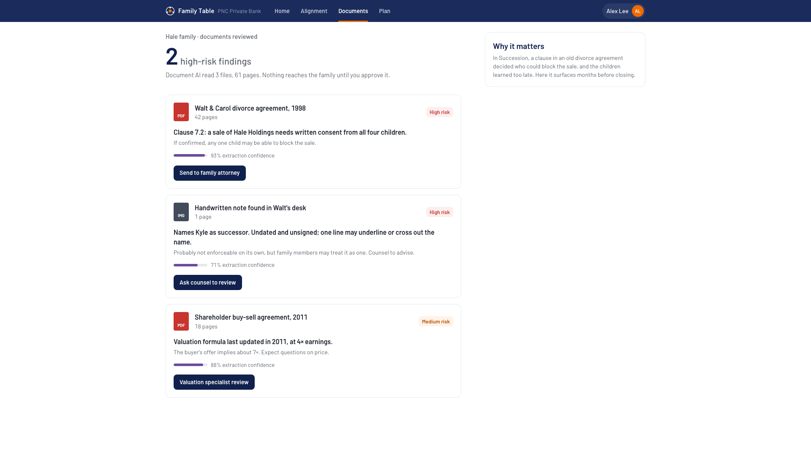

Family Table is a PNC Private Bank concept that helps real families avoid that ending. Everyone has their say in private. The advisor sees the problems early. The money, and the next generation, stay with PNC.
Selling a family business is the moment a bank either keeps a family for life or watches the money walk out. Most families aren't ready to talk about it.
of adult children use their parents' financial advisor.
Cerulli Associates, 2019of owners “profoundly regretted” selling a year later.
PNC, Begin at the endof business exits are involuntary: death, illness, divorce or dispute.
PNC Business Succession Planning seriesfamily business owners have no formal succession plan; family conflict is the top reason.
PNC Business Succession Planning seriesMeet the Hales: a fictional $48M freight company where each family member is modelled on a character from Succession. Pick a person and the app rearranges itself around what matters to them.




One simple journey. At every step the family sees one thing, the advisor sees another, AI does the reading, and a person makes the decision.
AI reads, sorts and explains. Fixed formulas do the money. People make every decision. In the prototype the AI is simulated; in production, Claude or GPT sit behind one PNC gateway with the same guardrails.
A machine-learning score on business-account activity, with its top reasons.
Machine learningAdvisor reviewsLive themes as family members type, and a reading of old agreements and notes.
Language modelMember sharesEach person's home is ordered around what they care about, and one tap explains why.
Rules todayExplainableAn assistant that answers clearly, shows the steps it took, and won't give legal or tax advice.
Claude / GPTAdvisor approvesPNC banks the business, so it can see a sale coming a year before closing. Outside wealth managers see the money only after it moves.
Each person answers alone. The advisor sees gaps, not words. Honest answers are data no competitor can buy or scrape.
Business, owners, spouse, heirs, trusts and accounts in one consented map, under one roof with Hawthorn IFS.
$27.0M lands at closing: the balance PNC keeps only if the family chooses to stay.
3 of 4 heirs bank elsewhere today; Family Table meets them before $9–10M reaches them.
One advisor handles the family with a brief instead of weeks of calls.
1. Family members answer honestly when answers stay private. Measure: check-in completion above 70%.
2. Advisors act earlier on the signal. Measure: first family meeting before the letter of intent.
3. Heirs open a PNC account. Measure: next-gen accounts per family within 12 months.